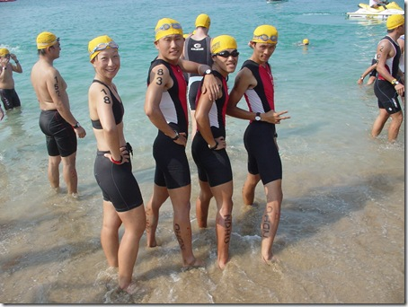
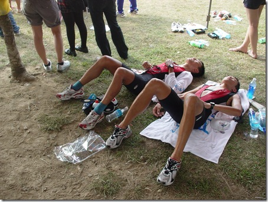
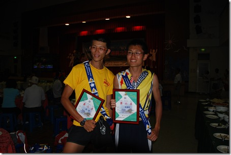
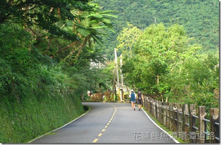
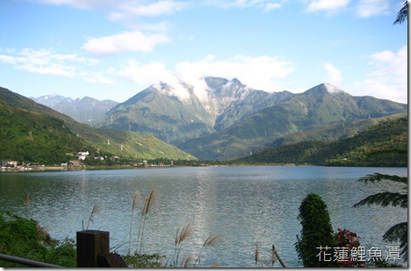
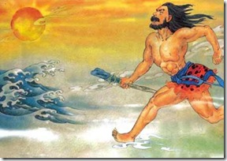

《鐵人三項》完整序文
這本書出版時因為必須考量到紙張的頁數與排版的問題，刪掉了序文中的一部分，在此放上原始的完整序文：

最右邊是 2008 年墾丁 113 公里半超鐵賽的冠軍—Shane Dennison(鄧子賢)，由右而左依序是 Ben、石頭、郭靖、David、李妍婷

2008 年墾丁 113 公里半超鐵賽前士氣旺盛的東華鐵人隊
帶著夸父精神追求屬於自己的鐵人三項賽
墾丁半超鐵賽道上的挫敗與衝突
2008 年 4 月 12 日，是我第一次比半程超級鐵人 113 公里比賽的日子。那場比賽中從自行車轉換到跑步之後發生的事，到現在還時常在腦中非常清晰地重播著：身體逐漸超出意識的控制之外，慢慢地不聽使喚，隨著逐漸搖晃的步伐、眼前晃動的柏油路面，逐漸以金黃亮眼的姿態刺痛雙眼。
到底發生了什麼事？
90 公里的自行車結束後，我想追前面的第一名，但我卻發現自己正躺在賽道上。那刺眼的陽光深深地烙印在腦海中。閉上眼睛也沒有用，沒想到人的眼皮竟然這麼不堪，為什麼會這樣呢？陽光像一顆關不掉的強力電燈泡，直射我瞳孔深處。而我竟然連抬起手臂來遮陽的力氣都沒有了！
我知道我不能躺在這，我要完成，這是我來這裡的目的。我不是為了躺在這才來墾丁的。陽光炙熱得可怕，但我無法移動我的身體。不久後，第三名從我的身旁跑過。一戶好心的人家幫忙把我的身體移到陰涼處，他們給我水，說要幫忙叫救護車。我說不行，上了車就沒辦法完成，之前的練習就沒有意義了。我說不行，絕對不行……要他們再給我一瓶水。躺在那裡聽心臟卟通卟通地跳，不管怎麼大口吸都吸不到空氣，缺氧的肌肉在身體內部扭成一團。我想起身喝水卻連坐起來的力氣都沒有。心臟在身體裡努力地掙扎，傳給大腦的訊號只剩痛苦，還有超乎痛苦以外的麻痺感。像是被綁起手腳丟到水裡頭一樣，心中逐漸被死亡的恐怖給籠罩，視線逐漸模糊。我會死嗎？阿爸阿母的臉、Ben 的臉、過去美好的不美好的回憶片段在腦中像快速播放的投影片一樣從腦袋流過。
我就這樣躺在好心人家的簷廊下。救護車沒有來，身體也沒有死掉，反而慢慢地恢復過來。正常的意識逐漸回到身體裡：「我現在正在墾丁 113 半超鐵最後路跑離終點九公里的賽道上」。也開始感覺到手腳的存在，試著移動看看卻有困難，簡直像線路壞掉的機器人一樣。我看著選手一個個從我眼前跑過去，我也想跑，但這可恨的身體竟一點也站不起來。這沒用的身體。
這時 Ben 出現在眼前，我一看到他時突然變得極端的氣憤，不等他說什麼就對他喊：「你快走，不要理我」。但他似乎一點也不理我說什麼的樣子，「不要等我，你快去完成這該死的比賽」，我用僅存的氣力向他喊著。我只記得那時什麼痛苦、恐怖的感覺都被憤怒給吸收掉了，在心胸裡逐漸轉化、膨脹到全身每一個細胞。「氣我這沒用的身體」，我竟然躺在這裡而不是在終點，我竟然失敗了……失敗了……我氣 Ben 之前在每一場練習說我可以成功，而我竟信以為真……我氣自己的自以為是……我氣自己竟失去了運動的初衷……這滿腔的氣憤只是以一句句向 Ben 怒喊著「你快走」、「別管我」發洩出來。他過來要扶我，我用無力的雙手推他、用虛脫且被尿失禁後沾滿臊味的腳踹他。但他就是不走，不繼續去完成這該死的比賽。
眼淚鼻涕和下體的尿水失去了控制在身體各部竄流，憤怒在心裡爆發，「你不走，我走」。我氣得跑回柏油路上。才驚覺我的身體又恢復到可以跑步的狀態。Ben 跟上來，陪著我，說話安慰我，取路旁補給站的冰水澆我，降低我的體溫，也澆熄了我心中的怒火。「其實，我在氣我自己」。後來，我才明白。只是我一直到很久以後都不願承認「自己練習不夠、自己準備不夠、自己心理素質不夠。那時，我還只是一個未成年的鐵人。」
「我想要更強。」
「明年我一定要準備充分再來一次。」

最後還是完賽了。賽後精疲力竭的石頭和郭靖。

最後竟然還有分組第六名。郭靖拿到分組第三。比完賽的三個月後，我們兩個共同經歷了另一段更嚴酷艱辛的旅程，以十七天的時間跑步環島。
隔日，在 Ben 開車回花蓮的路上我這麼想，「不管怎樣我一定要再來一次」。Ben 的福斯 T4 在台十一線上往東華大學的方向奔馳，湛藍的太平洋從道路旁無限地延伸下去，與天空相交成一線。過往的自己在腦中浮現：
為了一台 21 段變速腳踏車，第一次來上補習班這種地方
國小畢業的那年暑假，與好友鄧宏年一起到國一先修班聽說明會。聽完後繳上父母給的報名費，就這樣在美好的暑假被迫每天到水泥建築裡的冷氣房聽著國、英、數、理化等大人們認為的重要科目。
只是大人們不知，我們願意進去的原因是，只要繳了報名費後就能得到的 21 段變速腳踏車。對那個年紀的我們來說，一台腳踏車代表著自由，能去更遠的地方，還能享受在道路上與機車尬車的快感。
暑假結束，先修班班主任遞了張單子過來要我們回去跟父母拿錢繳國一第一學期的補習費。我說，我們沒有要補習啊！我們只是想要腳踏車才會來這裡的。我想要這麼說，但那個時候的我已經知道有些實話不能坦白說出來。他說，不管怎樣你們先把報名的簡章拿回去給你們的爸媽看再說。我說，我們沒有要補習，不用拿了。他不耐煩地把簡章塞到我們倆人背後的書包裡，然後好像在下什麼咒語般地說：「像你們這樣的小孩，不補習是不可能考上好高中的，不上好高中的話將來也別想有什麼出息。」
我氣炸了！拉著宏年的書包就往外跑。我跨上腳踏車用力踩想盡量逃得遠遠的。一回家就馬上跟阿爸說，我以後絕對不補習。絕對。要去學校上學是沒得選全臺灣的孩子都得這麼做的事，但進入補習班那種地方是可以選擇的。我記得當時深深地這麼認為。我絕對不再去那種地方。
既厭惡上學，也不想輸給其他同學
我非常討厭上學。學校這個環境好像要把我壓碎似地令我窒息，一樣的制服、一樣的頭髮、一樣的教科書、一樣的老師，每個學生做著一樣的試題依分數評量高下。如果，在那段時間我沒有運動的話，也許我會發瘋也說不定。國高中時期有好幾次，我自閉地把自己關在房間裡拒絕上學。對那時的我來說確切的理由我說不出口，我只是想逃走，逃到一個不再一成不變而且沒有制服的地方去。
那些日子，阿爸阿母總只能乾著急。記憶中，阿爸用他每日綑綁鋼索的粗厚手掌摸摸我的額頭。沒有發燒。然後騎著機車達達達地離開。我的心隨著他離開的引擎聲被揪得更緊更難過。他每天在太陽下奔波賺錢養活我們一家，供我讀書，我卻連到學校讀書這種事都做不好。最終，他在路旁默默敲打鋼索的身影總會覆蓋一切，把我又推回學校裡去。
在學校裡，我努力研讀教科書裡已經規定好的內容。既然非來這裡不可，我就不想輸，怎麼樣都不想輸給同在學校裡的人，輸給制定這些科目這些考卷與制服的那些人，更不想輸給那些花錢去補習班裡的同學。所以我非常用功，把全部的精力都花在讀書與考試上，但同時又非常厭惡這樣的自己。我既想逃走，又不得不每天到學校去變成老師眼中成績優異的資優生。
厭惡自己時，就到籃球場去投籃，把自厭與想逃走的心情一顆顆地投到籃框裡去，藉由投籃那動作，盡量把自己耗盡後就可以在書桌前繼續打開教科書，繼續演練做不完的試題卷。就這樣，在國高中六年裡，我的成績一直很好，投籃也準得沒話說。因為我不想輸，不想再讓爸媽操心。最後我進入好的高中好的大學，好的科系，也完成了學業。但我真心想做的事，一樣也沒完成。
我有許多不著邊際的夢想，但因為學校裡的功課與考試，所以永遠只能不著邊際，從沒有時間去實踐。但從大學畢業，完成了必須完成的事之後，我拋下過去努力成就的一切，開始面對自己決定的挑戰：前往花蓮研究中國古籍、盡情地讀自己想讀的書吸收自己想吸收的知識，還有成為一個專業的鐵人三項選手。
進入蘇花公路的十字路口
我一直記得拋下一切前往花蓮的第一天。那是個陰黯沉悶的星期天，早上四點從中壢家裡出發。阿爸要我開車，我答應了。平常我是不肯開車的。因為某種偏執的理由而討厭握著方向盤踩油門，但這次不同，我知道阿爸在抵達花蓮後又要馬上開回中壢，所以那天就算他沒說我還是會放下偏執握起方向盤。
剛上高速公路沒多久就下起雨來，一開始只是毛毛細雨，從雪山隧道出來後，雨勢開始像一發不可收拾般下個不停。進入蘇花公路後，大雨一點也沒有減緩的趨勢，車身外下著像是加壓蓮蓬頭似的大雨，雨水打在蘇花公路旁的岩壁上、道路上、汽車的擋風玻璃與板金上，一切都似乎要被敲碎般地啪啦啪啦地響著。車身外的雨水像是活著的生物般，敲打著流動著沖蝕著。我默默地開車，以非常緩慢的速度前進，仔細確認道路上沒有落石、對向來車沒有逾越中線後才敢輕踩油門。我瞥向坐在副駕駛座的阿爸，他望著擋風玻璃外面的大雨不斷提醒我：「慢慢開，沒關係。」「看清楚有沒有落石再駛過」他用台語說著。我同時也感覺到後座阿母的緊張。我一向是不怎麼懂得害怕的人，竟然在那雨水的壓迫下不斷地聞到死亡的味道，而且在車裡瀰漫不散。
「來東華讀書是不是一種錯誤的決定，爸媽到底是怎麼想的？」
「這麼大的雨，到底能開到東華嗎？會不會坍方？他們還開得回來嗎？」
「我到花蓮去確切來說是要追尋什麼呢？」我握著方向盤，道路曖昧不明，擋風玻璃上的雨刷來不及清除頑固的雨水，每一個彎道後面到底還有沒有路都不能肯定，「我害怕了！十分害怕！」好想跟阿爸說我們就掉頭回家好不好。我知道他們不會反對，他們也希望我不要到花蓮去。所以我還是繼續默默地踩著油門向未知的道路開去。
他理直氣壯地大喊「這是我們的花蓮！」

2006 年中秋前夕，阿母打來問我是否回家過節。我為了省車錢，為了練習，留在花蓮。
中秋節當天早上與 Ben 繞著鯉魚潭跑了四圈(20 公里)。我們邊跑邊談各種關於鐵人三項的事。他告訴我除了訓練之外、休息、飲食與比賽速度的掌控，都要用頭腦去運用，才是一個聰明的鐵人。最後他以那字彙有限的中文不斷提醒我：「要用你的頭去練習、去比賽。」從那天開始，我才知道原來運動還有這麼大的學問。
那只不過是三年多前的事，現在，我竟然把他那天在環潭道路上所談的事，寫出來，而且放到大家的眼前。這樣回顧起來，人生真是不可思議阿！
那天最後跑完坐在路邊時，他看著我說：「Kuo Feng，不要著急，慢慢來，不要放棄。」我真的被他這幾句簡短的中文與熱心的眼神給感動到。在漫長的訓練日子裡，我總是記起 Ben 那天看著我說的眼神和他的「不要著急，不要放棄」。休息一會之後，Ben 直接帶我往潭北走去，一開始我以為他要去賞風景。沒想到他說：「走，去游泳。」我嚇了一跳，「什麼，去鯉魚潭裡游泳嗎？」他毫不遲疑地走到岸邊，脫掉衣服就跳下去。他的舉動完全超乎我這個二十幾年來在都市長大的認知。他沉入水中再浮出水面，對我喊著：「come on, Kuo Feng, come on, 很舒服」。正當我感到驚訝與猶豫間，某位好像管理員的人走過來說：「嘿，這裡不能游泳。」一臉為難，語氣不善。

我看著 Ben 在水裡好像很舒服的樣子，也十分想要下水一游。但那管理員盯著我說：「你不要跟著要下水。」雖然他的手沒拉住我，但我可以感覺到他的眼神已經拉住我，此時我再回望 Ben。他當管理員好像不存在似地改以命令的口氣對我說：「Kuo Feng，快點下來！」然後又很陶醉地說：「很舒服喔！」
我看看 Ben，看看管理員，再環望四周一圈。這不就是我夢想中的花蓮嗎！「好漂亮的湖、好漂亮的山，我也好想要泡在裡面喔！」內心掙扎。
「先生，你不能下水啦，很危險啦。」管理員說，「今天有長官會來，你這樣我們不好看。」
「不會啦，我們都有救生員執照」我說。再回頭望向 Ben。
「你不會游泳嗎？」Ben 看到我有意下來後，終於正視管理員且大聲地問他。
「………」他沒回答。
「你是花蓮人嗎？」Ben 再大聲地問另一個問題。
「………」他還是沒回答。
「我們住在這裡。」
「這是我們的土地、我們的花蓮。」Ben 像小孩子一樣，在水裡有些許激動地說。隱藏在他些許的激動裡有他的真實情感在，在語言難述更何況以他有限的中文字彙之下，他只說：「這是我們的土地、我們的花蓮。」他說這話時，我被他的動作、語言與神情給震撼到了，遂一躍而下，一陣清涼。
他比台灣人更愛台灣這片土地，他不像那些電視上的名人口頭上說：「愛台灣」而已，卻根本沒有真正像 Ben 這樣親近過這片土地。他在這裡跑步、游泳與騎車，他單純地喜歡在這片天地中運動的滋味。從美國來到這裡，「這是我們的土地、我們的花蓮。」這是他在潭水裡向管理員喊出的話，喊得理直氣壯。
2010 年 7 月 13 日，我即將退伍。「退伍後你要做什麼？」父母、部隊裡的長官與弟兄，以及熟識的好友們都會向我丟出這個問題。
「我要到花蓮去定居。」
「花蓮！？找到工作了？」
「沒有。」
「那你去做什麼？」
「練鐵人，我想要變得更強！」
「啥！」
「還有想寫作。」
「寫作……你想當作家喔。那你靠什麼生活？」
「還不知道。」
我不再顧慮身旁一切好意想要拉住我的手臂。我準備一躍而下，感受清涼的自由。
「就算很窮也沒關係！」
「對！就算很窮也沒關係！」
夸父精神＝鐵人精神
2009 年 4 月 18 日，是那個在心頭徘徊一整年的比賽──半程超級鐵人 113 公里比賽的日子。比賽的三天前，顏崑陽老師送來了一本散文集。先是驚訝、歡喜，又深深覺得崇敬不已，想不到老師半年前答應的事，還放在心上。其中有一篇〈來到落雨的小鎮〉，顏老師從另一種視角來看夸父追日，他寫到：
在古老的傳說中，「夸父」總被人譏為愚蠢與不自量力。因為他追逐著落日，直到渴死。一輪落日如血，滾向蒼茫的天陲，曠野是落盡翠綠的莽林，死黑色的枝椏若劍戟森然羅列，在餘暉中顯得銳利而邪惡。吁噓！吁噓！夸父飛舞著滿頭如雪的白髮，急點著手中的枴杖，劇喘地追逐著落日。馳盡荒涼的古道，橫過劍戟羅列的曠野，還是止不住落日的行腳。

參加鐵人三項的選手們，我們又何嘗不是日復一日在劇喘中前進，追逐著更渺茫的目標。我們又何嘗不是奔馳在孤獨的道路上。比賽前所有的訓練，在車陣、雨水、泥沙、烈日與冰冷的空氣中前進與掙扎，在外人來看都似沒有目的的執著。每天每天，吁噓吁噓地喘氣，大部分的人都視這種追求與執著為「愚蠢」。像夸父追日一樣愚蠢。
「為什麼你一個年過二十七的人，不為自己的將來好好打算，卻把年輕的生命拋擲在沒有意義的前進之中？」具有當前正常社會價值觀的人總要這麼質問。我無法清楚回答。所以，我要謝謝顏崑陽老師，他的話語支持著我，他說：
為什麼我們要將這種追求到底的執著譏為愚蠢？為什麼我們要將這份敢於追求的勇氣譏為不自量力？知道做不到，而還肯去做的人，總比善於為自己的怠惰找藉口的人，來得聰明些吧！因為誰說過：「力之執著，即是智慧」。能將自己的生命投注在一份理想的追求中，總比徒然無謂的苟存，要有意義多了吧！因為誰說過：「殉真理而死，即是另一種存在。」如是，我們還能去譏誚夸父的荒誕嗎？
我清楚地知道自己不可能成為最厲害的選手，我知道自己天生生理條件受限，再怎麼努力也不可能追到魏振展、王顥翔、楊茂雍、謝昇諺、吳冠融……等臺灣一流的選手，但我還是要把自己的生命投注在此種對體能極限的追求中。我還是要再努力下去……
夕陽，是追不上的，我們知道。但我們又何嘗不是時常在追逐著一些永不可企及的目標？我們實在不能以「追到手」或「追不到手」，去計算一項追求的成敗。只要你在追求的路程中，未曾怠惰腳步，你便算得是成功了。（ 以上文字摘自顏崑陽：《新世紀散文家：顏崑陽精選集》，臺北市：九歌，2003 年 10 月 10 日，頁 80-81。）
比賽前一夜，我走在墾丁南灣的沙灘上，回想去年失敗倒在賽道上的自己與 Ben 關心的眼神。去年的挫敗與一年來練習的種種辛酸苦累隨著浪潮聲一陣陣襲來，心情禁不住緊張與激動起來。熱血逐漸加溫沸騰。就在明天了。我不想輸。
右手上是顏老師前幾天送的散文集，我翻開來隨著老師遙想著遠古夸父的精神，原本緊張的情緒逐漸歸於平淡。冠軍「追到手」或「追不到手」都無所謂了，在這一年來的旅程中我從未怠惰腳步，所以「只要帶著夸父精神來完成這場比賽，不管結果如何都不會有遺憾吧」，我這麼認為。
在此也為各位在人生旅途中追尋自己心中夕陽的你們，獻上一句：「加油！『結果』只是花的死亡；『過程』創造了一切的意義。」如果，你們心中的夕陽也剛好是「鐵人三項」的話，那我們就一起在辛苦的訓練與比賽的過程中創造屬於自己的存在意義吧！